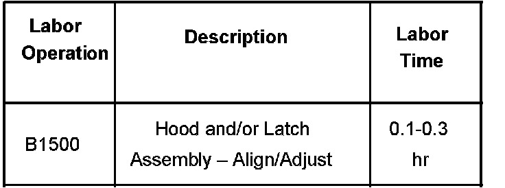

Body - High Effort to Close Hood
Bulletin No.: 06-08-63-001ADate: July 19, 2007
TECHNICAL
Subject:
High Closing Effort of Hood (Align Hood Latch)
Models:
2007-2008 Cadillac Escalade, Escalade ESV, Escalade EXT
2007-2008 Chevrolet Avalanche, Suburban, Tahoe
2007-2008 GMC Yukon, Yukon XL
Attention:
Due to design changes incorporating the addition of a gas charged assist strut, the way in which the vehicles hood closes is different from the previous GM full-size utility vehicles. Customers should be instructed to lower the hood slowly to the secondary latch position (hood lowered to first engagement point) then push down firmly on the front edge of the hood to securely close it. You must only push on the rolled top edge of the hood at the very front. Do not push farther back on any flat section of the hood as you may dent the metal. If an attempt is made to "slam" the hood from a wide open point, the resistance of the gas strut may overcome the users input, and result in high closing effort. If the hood is closed properly and excessive pressure is still required to engage the latch, follow this Service Bulletin.
Supercede:
This bulletin is being revised to add the 2008 model year. Please discard Corporate Bulletin Number 06-08-63-001 (Section 08 - Body & Accessories).
Condition
Some customers may comment that the hood is difficult or requires excessive pressure to latch.
Cause
The design of the new full-size vehicles listed above incorporates a gas strut to assist raising and holding the hood in a fully open position. When closing the hood you must first overcome the pressure of the gas hood strut, and then the secondary and primary hood latch positions. If the rubber bumpers are out of adjustment, or the hood latch is misaligned, excessive latching effort may be experienced.
Correction
Align the hood latch. Inspect and adjust the rubber hood bumpers as required using the following procedure.
Inspect the hood alignment for height, relative to the leading edge of the front fenders. This is the critical point for alignment to achieve good closing action.
Release the hood.
You must only push on the rolled top edge of the hood at the very front. Do not push farther back on any flat section of the hood as you may dent the metal.
If the hood was out of alignment, adjust the bumpers as needed to properly align the hood. Close and check the hood for proper alignment and closing action.
With the hood in the secondary latch position, you should be able to view the striker and the latch through the front opening of the hood.
Check the alignment of the striker. The striker should be centered in the primary latch as shown in the illustration above.
If the striker is out of alignment, loosen the three retaining bolts and adjust until the striker is centered.
Tip
You may wish to mark the latch position BEFORE adjusting to assist you in maintaining the original vertical alignment of the latch.
Secure the three latch retaining bolts.
Tighten
Tighten the bolts to 10 N.m (89 lb in).
Confirm proper operation and effort to close the hood.
Warranty Information

Foe vehicles repaired under warranty, use the table.

Disclaimer